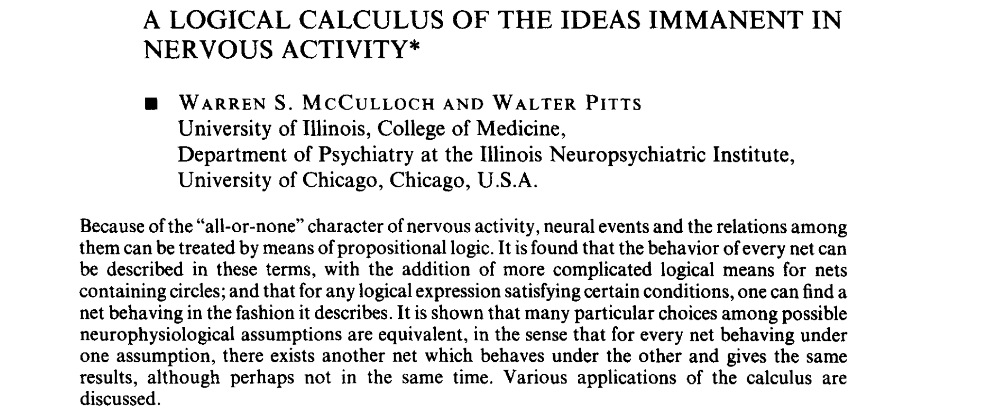
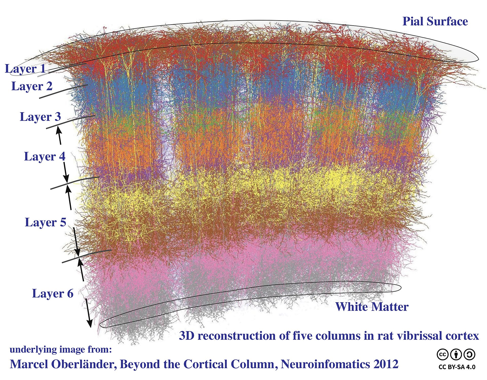
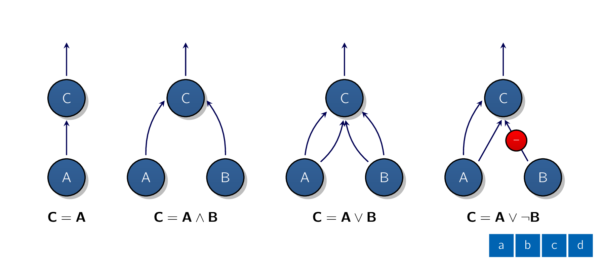
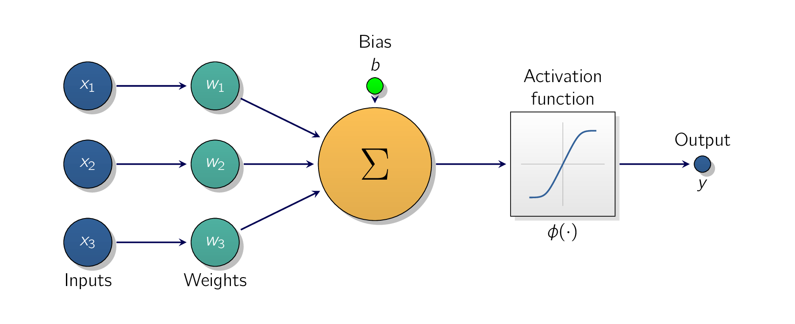
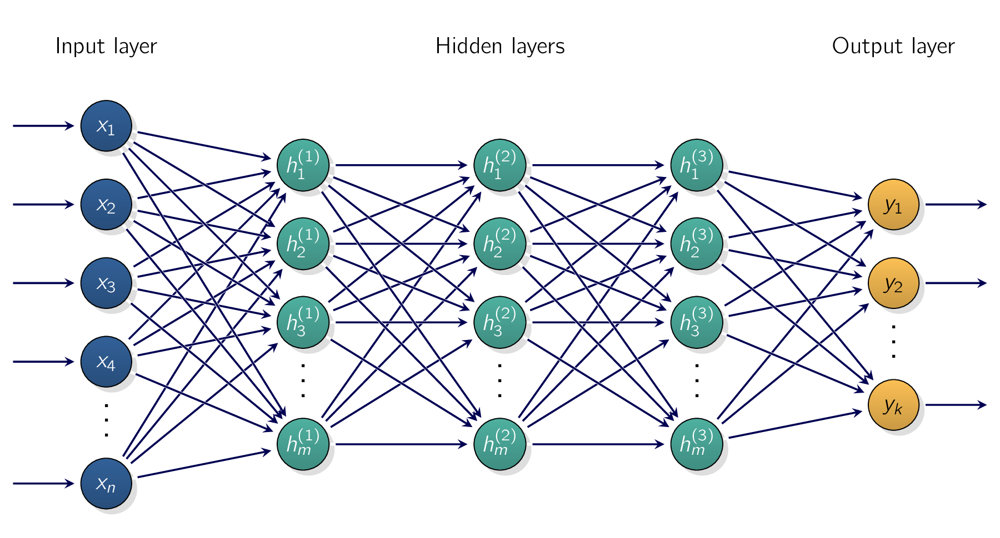
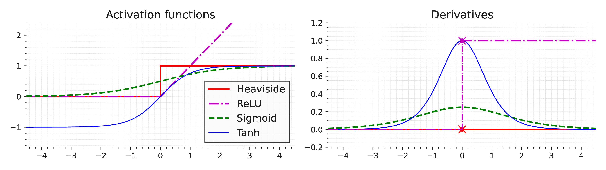

While it may seem ANNArtificial Neural NetworksArtificial Neural Networkss are the cutting edge in
MLMachine LearningMachine Learning, They have been around for quite a while: they were first
introduced back in 1943 by the
This was the first ANNArtificial Neural NetworksArtificial Neural Networks architecture [†]McCulloch, W. S. & Pitts, W. A logical calculus of the ideas immanent in nervous activity. The bulletin of mathematical biophysics 5, 115–133 (1943).
Since then, many other architectures have been invented. The early successes of ANNArtificial Neural
NetworksArtificial Neural Networkss led to the widespread belief that we would soon be conversing
with truly intelligent machines. When it became clear in the 1960s that this promise would go
unfulfilled, [6]
at least for quite a while. funding was diverted elsewhere, and ANNArtificial
Neural NetworksArtificial Neural Networkss entered a long winter. This is also known as the
Well, here are a few good reasons to believe that this time is different and that the renewed interest in ANNArtificial Neural NetworksArtificial Neural Networkss will have a much more profound impact on our lives: There is now a huge quantity of data available to train ANNArtificial Neural NetworksArtificial Neural Networkss, and ANNArtificial Neural NetworksArtificial Neural Networkss frequently outperform other MLMachine LearningMachine Learning techniques on very large and complex problems. One of the major turning points of ANNArtificial Neural NetworksArtificial Neural Networks was the fundamental question of:
The tremendous increase in computing power since the 1990s now makes it possible to train large ANNArtificial Neural NetworksArtificial Neural Networkss in a reasonable amount of time. This is in part due to Moore’s law, [7] The observation that the number of transistors in an ICIntegrated CircuitA small electronic device combining numerous interconnected components, like transistors, resistors, and capacitors, onto a single semiconductor chip, usually silicon doubles about every two years. Moore’s law is an observation and projection of a historical trend. Rather than a law of physics, it is an empirical relationship. but also thanks to the gaming industry, which has stimulated the production of powerful GPU cards by the millions which have become the norm to train MLMachine LearningMachine Learning instead of CPUs. In addition to previous statements, cloud platforms have made this power accessible to everyone. The training algorithms have been improved. From a realistic standpoint, they are only slightly different from the ones used in the 1990s, but these relatively small tweaks have had a huge positive impact.
Some theoretical limitations of ANNArtificial Neural NetworksArtificial Neural Networkss have turned out to be benign in practice. For example, many people thought that ANNArtificial Neural NetworksArtificial Neural Networks training algorithms were doomed because they were likely to get stuck in local optima [†]Goodfellow, I. J., Vinyals, O. & Saxe, A. M. Qualitatively characterizing neural network optimization problems. arXiv preprint arXiv:1412.6544 (2014), but it turns out that this is NOT a big problem in practice, especially for larger ANNArtificial Neural NetworksArtificial Neural Networkss:
The local optima often perform almost as well as the global optimum.
ANNArtificial Neural NetworksArtificial Neural Networkss seem to have entered a virtuous circle of funding and progress. Amazing products based on ANNArtificial Neural NetworksArtificial Neural Networkss regularly make the headline news, which pulls more and more attention and funding toward them, resulting in more and more progress and even more amazing products.

Before we discuss artificial neurons, let’s take a quick look at a biological neuron. It is an unusual-looking cell mostly found in animal brains which we can see in Fig. 1.4.
It’s composed of a cell body containing the nucleus and most of the cell’s complex components, many
branching extensions called dendrites, plus one very long extension called the
Therefore, individual biological neurons seem to behave in a simple way, but they’re organised in a vast network of billions, with each neuron typically connected to thousands of other neurons. Highly complex computations can be performed by a network of fairly simple neurons, much like a complex anthill can emerge from the combined efforts of simple ants. The architecture of biological neural networks (BNNs) is the subject of active research, but some parts of the brain have been mapped [†]Barrett, D. G., Morcos, A. S. & Macke, J. H. Analyzing biological and artificial neural networks: challenges with opportunities for synergy? Current opinion in neurobiology 55, 55–64 (2019). These efforts show that neurons are often organised in consecutive layers, especially in the cerebral cortex. [10] This is the outer layer of the brain.


Let’s see what these networks do:
-
The first network on the left is the
identity function : if neuron is activated, then neuron gets activated as well; [11] since it receives two input signals from neuron but if neuron is off, then neuron is off as well. -
The second network performs a logical AND: neuron C is activated only when both neurons A and B are activated (a single input signal is not enough to activate neuron C).
-
The third network performs a logical OR: neuron C gets activated if either neuron A or neuron B is activated (or both).
-
Finally, if we suppose that an input connection can inhibit the neuron’s activity (which is the case with biological neurons), then the fourth network computes a slightly more complex logical proposition: neuron
C is activated only if neuron A is active and neuron B is off. If neuron A is active all the time, then you get a logical NOT: neuron C is active when neuron B is off, and vice versa.
You can imagine how these networks can be combined to compute complex logical expressions.
The perceptron is one of the simplest ANNArtificial Neural NetworksArtificial Neural
Networks architectures, invented in 1957 by Frank Rosenblatt [12][12]Frank Rosenblatt
Then it applies a step function to the result:
For those of you who are observant, this should look familiar as it is similar
to

The most common step function used in perceptrons is the Heaviside step and sometimes the sign function is used instead [†]Sharma, S., Sharma, S. & Athaiya, A. Activation functions in neural networks. Towards Data Sci 6, 310–316 (2017).
A single TLUThreshold Logic UnitThreshold Logic Unit can be used for simple linear binary classification:
It computes a linear function of its inputs, and if the result exceeds a threshold, it outputs the positive class. Otherwise, it outputs the negative class. They exhibit a similar behaviour to logistic regression or linear SVMSupport Vector MachinesSupport Vector Machines classification.
It is
possible, for example, use a single TLUThreshold Logic UnitThreshold Logic Unit to classify
where:
-
is the matrix of input features. It has one row per instance and one column per feature.
-
is the weight matrix containing all the connection weights. It has one row per input and one column per neuron.
-
is the bias term containing all the bias terms: one per neuron.
-
is the activation function is called the activation function: when the artificial neurons are TLUThreshold Logic UnitThreshold Logic Units, it is a
step function .
Now the question is:
The original perceptron training algorithm proposed by Rosenblatt was largely inspired by Hebb’s
rule [†]Sompolinsky, H. The theory of neural networks: The Hebb rule and beyond in Heidelberg
Colloquium on Glassy Dynamics: Proceedings of a Colloquium on Spin Glasses, Optimization and
Neural Networks Held at the University of Heidelberg June 9–13, 1986 (2006), 485–527. In his
1949 book
Siegrid Löwel later summarized Hebb’s idea in the catchy phrase,
This means the connection weight between two (
This rule later became known as Hebb’s rule [14]
The following is an excerpt from primary author of the idea.
Perceptrons are trained using a variant of this rule that takes into account the error made by the network when it makes a prediction. The perceptron learning rule reinforces connections that help reduce the error.
More specifically, the perceptron is fed one training instance at a time, and for each instance it makes its predictions. For every output neuron that produced a wrong prediction, it reinforces the connection weights from the inputs that would have contributed to the correct prediction.
where:
-
is the connection weight between the input and the neuron.
-
is the input value of the current training instance.
-
is the output of the output neuron for the current training instance.
-
is the target output of the output neuron for the current training instance.
-
is the learning rate.
The decision boundary of each output neuron is linear, therefore perceptrons are incapable of learning
complex patterns. However, if the training instances are
This is called the perceptron convergence theorem.
import numpy as np
from sklearn.datasets import load_iris
from sklearn.linear_model import Perceptron
iris = load_iris(as_frame=True)
X = iris.data[["petal length (cm)", "petal width (cm)"]].values
y = (iris.target == 0) # Iris setosa
per_clf = Perceptron(random_state=42)
per_clf.fit(X, y)
X_new = [[2, 0.5], [3, 1]]
# predicts True and False for these 2 flowers
y_pred = per_clf.predict(X_new)
print(y_pred)
For those of you who have taken a Data Science II course by yours truly, you may have noticed that
the perceptron learning algorithm strongly resembles sklearn’s
Perceptron
class is equivalent to using an SGDClassifier with the following hyperparameters:
-
loss="perceptron", -
learning_rate="constant", -
eta0=1, the learning rate -
penalty=None, no regularization.
In their 1969 monograph Perceptrons, Marvin Minsky and Seymour Papert highlighted a number of
A simple logic gate problem which is proven to be unsolvable using a single-layer perceptron.
This is true of any other linear classification model, but researchers had expected much more from perceptrons, and some were so disappointed, they dropped neural networks altogether in favour of higher-level problems such as logic, problem solving, and search. The lack of practical applications also didn’t help.
It turns out that some of the limitations of perceptrons can be eliminated by stacking multiple perceptrons. The resulting ANNArtificial Neural NetworksArtificial Neural Networks is called a MLPMulti-layer PerceptronsMulti-layer Perceptrons and a MLPMulti-layer PerceptronsMulti-layer Perceptrons can solve the XOR problem [†]Popescu, M.-C. et al. Multilayer perceptron and neural networks. WSEAS Transactions on Circuits and Systems 8, 579–588 (2009).
Perceptrons do NOT output a class probability. This is one reason to prefer logistic regression over perceptrons. Moreover, perceptrons do NOT use any regularization by default, and training stops as soon as there are no more prediction errors on the training set, so the model typically does not generalize as well as logistic regression or a linear SVM classifier. However, perceptrons may train a bit faster.
An MLPMulti-layer PerceptronsMulti-layer Perceptrons is composed of one input layer, one or more layers of TLUThreshold Logic UnitThreshold Logic Units called hidden layers, and one final layer of TLUThreshold Logic UnitThreshold Logic Units called the output layer. The layers close to the input layer are usually called the lower layers, and the ones close to the outputs are usually called the upper layers.
The signal flows only in one direction, [15] From input to output. so this architecture is an example of a FNNFeedforward Neural NetworksFeedforward Neural Networks [†]Bebis, G. & Georgiopoulos, M. Feed-forward neural networks. Ieee Potentials 13, 27–31 (1994).
When an ANNArtificial Neural NetworksArtificial Neural Networks contains a deep stack of hidden layers, it is called a DNNDeep Neural NetworksDeep Neural Networks. The field of deep learning studies DNNDeep Neural NetworksDeep Neural Networkss, and more generally it is interested in models containing deep stacks of computations [†]Samek, W. et al. Explaining deep neural networks and beyond: A review of methods and applications. Proceedings of the IEEE 109, 247–278 (2021).

For many years researchers struggled to find a way to train MLPMulti-layer PerceptronsMulti-layer
Perceptronss, without success. In the early 1960s several researchers discussed of using
To put it simply:
It can find out how each connection weight and each bias should be tweaked to reduce the ANNArtificial Neural NetworksArtificial Neural Networkss error.
These gradients can then be used to perform a gradient descent step. Repeating the process of computing the gradients automatically and taking a gradient descent step, the neural network’s error will gradually drop until it eventually reaches a minimum.
This combination of reverse-mode automatic differentiation and gradient descent is now called backpropagation [†]Hecht-Nielsen, R. Theory of the backpropagation neural network in Neural networks for perception 65–93 (Elsevier, 1992).
There are various automatic differentiation techniques (i.e., forward and reverse), with each having its own advantages and disadvantages. Reverse-mode autodiff is well suited when the function to differentiate has many variables (e.g., connection weights and biases) and few outputs (e.g., one loss).
Backpropagation can actually be applied to all sorts of computational graphs, not just neural networks: Linnainmaa’s M.Sc thesis was not about neural nets, it was more general. It was several more years before backprop started to be used to train neural networks, but it still wasn’t mainstream.
Then, in 1986, David Rumelhart, Geoffrey Hinton, and Ronald Williams published a groundbreaking paper analyzing how backpropagation allowed neural networks to learn useful internal representations [†]Rumelhart, D. E., Hinton, G. E. & Williams, R. J. Learning representations by back-propagating errors. nature 323, 533–536 (1986). Their results were so impressive that backpropagation was quickly popularized in the field. Today, it is by far the most popular training technique for neural networks.
Let’s run through how backpropagation works again in a bit more detail:
- 1.
- It handles one mini-batch at a time, and goes through the full training set multiple times. Each pass is called an epoch.
- 2.
- Each mini-batch enters the network through the input layer. The algorithm then computes the output of all the neurons in the first hidden layer, for every instance in the mini-batch. The result is passed on to the next layer, its output is computed and passed to the next layer, and so on until we get the output of the last layer, the output layer.
- 3.
- Next, the algorithm measures the network’s output error. This means, it uses a loss function that compares the desired output and the actual output of the network, and returns some measure of the error.
- 4.
- It then computes how much each output bias and each connection to the output layer contributed to the error. This is done analytically by applying the chain rule, which makes this step fast and precise.
- 5.
- The algorithm then measures how much of these error contributions came from each connection in the layer below, again using the chain rule, working backward until it reaches the input layer. As explained earlier, this reverse pass efficiently measures the error gradient across all the connection weights and biases in the network by propagating the error gradient backward through the network.
- 6.
- Finally, the algorithm performs a gradient descent step to tweak all the connection weights in the network, using the error gradients it just computed.
Initialize all the hidden layers’ connection weights randomly, or training will fail.
For example, if you initialize all weights and biases to zero, then all neurons in a given layer will be perfectly identical, and therefore backpropagation will affect them in exactly the same way, so they will remain identical.
In other words, despite having hundreds of neurons per layer, your model will act as if it had only one neuron per layer: it won’t be too smart. If instead you randomly initialize the weights, you break the symmetry and allow back-propagation to train a diverse team of neurons.
In short, backpropagation makes predictions for a mini-batch (forward pass), measures the error, then goes through each layer in reverse to measure the error contribution from each parameter (reverse pass), and finally tweaks the connection weights and biases to reduce the error, which is the gradient descent step.
For back-propagation to work properly, Rumelhart and his colleagues made a key change to the MLPMulti-layer PerceptronsMulti-layer Perceptrons’s architecture by replacing the step function with the logistic function:
Which is also called the sigmoid function. This was an important improvement as step function contains only flat segments, so there is no gradient to work with, while the sigmoid function has a well-defined nonzero derivative everywhere. In fact, the backpropagation algorithm works well with many other activation functions, not just the sigmoid function.
Here are two (
Hyperbolic tangent function
Similar sigmoid function, is also S-shaped,
The rectified linear unit function
It is continuous bu NOT differentiable at as the slope changes abruptly, which can make gradient descent bounce around, and its derivative is 0 for . In practice, however, it works very well and has the advantage of being fast to compute, so it has become the default.
Importantly, the fact that it does NOT have a maximum output value helps reduce some issues during gradient descent.
With all these information you might wonder:
Chaining several linear transformations, gives you only linear transformation.
For example:
As this example shows, we don’t have some nonlinearity between layers, then even a deep stack of layers is equivalent to a single layer, and we can’t solve very complex problems with that.
A large DNNDeep Neural NetworksDeep Neural Networks with non-linear activations can theoretically approximate any continuous function.

First, MLPMulti-layer PerceptronsMulti-layer Perceptronss can be used for
For multivariate regression, [18] i.e., to predict multiple values at once. we need one output neuron per output dimension.
As an example, to locate the center of an object in an image, you need to predict 2D coordinates, so
you need two (
sklearn
includes an MLPRegressor class, so let’s use it to build an MLPMulti-layer PerceptronsMulti-layer
Perceptrons with three (sklearn’s fetch_california_housing() function to load the data instead
of downloading from a sketchy website.
from sklearn.datasets import fetch_california_housing
from sklearn.model_selection import train_test_split
from sklearn.neural_network import MLPRegressor
from sklearn.pipeline import make_pipeline
from sklearn.preprocessing import StandardScaler
housing = fetch_california_housing()
X_train_full, X_test, y_train_full, y_test = train_test_split(
housing.data, housing.target, random_state=42)
X_train, X_valid, y_train, y_valid = train_test_split(
X_train_full, y_train_full, random_state=42)
mlp_reg = MLPRegressor(hidden_layer_sizes=[50, 50, 50], random_state=42)
pipeline = make_pipeline(StandardScaler(), mlp_reg)
pipeline.fit(X_train, y_train)
y_pred = pipeline.predict(X_valid)
rmse = root_mean_squared_error(y_valid, y_pred)
print(rmse)
The following code starts by fetching and splitting the dataset, then it creates a pipeline to standardise
the input features before sending them to the MLPRegressor. This is very important for
ANNArtificial Neural NetworksArtificial Neural Networks as they are trained using gradient descent,
and gradient descent does NOT converge very well when the features have very different
scales.
Finally, the code trains the model and evaluates its validation error. The model uses the ReLU
activation function in the hidden layers, and it uses a variant of gradient descent called Adam [19]
an
optimization algorithm that improves upon gradient descent by using adaptive learning rates for each
parameter, combining the benefits of momentum and RMSprop. It calculates both the first moment
(mean of gradients) and the second moment (uncentered variance of gradients) to adapt the learning
rate during training. This makes it computationally efficient, suitable for large datasets, and effective
for non-stationary or sparse problems to minimize the mean squared error, with a little bit of
regularisation:
We get a validation of about 0.505, which is comparable to what you would get with a random forest classifier.
This MLPMulti-layer PerceptronsMulti-layer Perceptrons does not use any activation function for the output layer, so it’s free to output any value it wants.
This is generally fine, but if we want to guarantee the output will always be positive, then we should
use the ReLU activation function in the output layer, or the
The softplus function is
It is a smooth approximation (in fact, an analytic function) to the ramp function, which is known as the rectifier or ReLU (rectified linear unit) in machine learning. For large negative it is , so just above 0, while for large positive it is , so just above .
Softplus is close to 0 when z is negative, and close to z when z is positive. Finally, if you want to guarantee that the predictions will always fall within a given range of values, then you should use the sigmoid function or the hyperbolic tangent, and scale the targets to the appropriate range: 0 to 1 for sigmoid and -1 to 1 for tanh.
Sadly, the MLPRegressor class does not support activation functions in the output layer.
Building and training a standard MLPMulti-layer PerceptronsMulti-layer Perceptrons with sklearn is
very convenient, but features are limited. This is why we will switch to Keras in the second part of this
chapter.
The MLPRegressor class uses the MSEMean Square ErrorMean Square Error, which is usually what we
want for regression, but if we have a lot of outliers in the training set, we may prefer to use the
MAEMean Absolute ErrorMean Absolute Error instead. Alternatively, we may want to use the Huber
loss, which is a combination of both. It is quadratic when the error is smaller than a threshold
(typically 1) but linear when
the error is larger than .
The linear part makes it less sensitive to outliers than the mean squared error, and the quadratic part
allows it to converge faster and be more precise than the mean absolute error. However, MLPRegressor
only supports the MSE.
MLPMulti-layer PerceptronsMulti-layer Perceptronss can also be used for classification tasks. For a binary classification problem, we just need a single output neuron using the sigmoid activation function:
The output will be a number between 0 and 1, which you can interpret as the estimated probability of the positive class.
The estimated probability of the negative class is equal to one minus that number.
MLPMulti-layer PerceptronsMulti-layer Perceptronss can also easily handle multi-label binary
classification tasks. For example, you could have an email classification system that predicts whether
each incoming email is ham or spam, and simultaneously predicts whether it is an urgent or nonurgent
email.
In this case, you would need two (
Note the output probabilities do NOT necessarily add up to 1.
This lets the model output any combination of labels where we can have nonurgent ham, urgent ham, nonurgent spam, and perhaps even urgent spam. [20] However, this would probably be an error.
If each instance can belong only to a single class, out of three or more possible classes (e.g., classes 0 through 9 for digit image classification), then we need to have one output neuron per class, and you should use the softmax activation function for the whole output layer. The softmax function will ensure that all the estimated probabilities are between 0 and 1 and that they add up to 1, since the classes are exclusive. [21] This is called multiclass classification.
Regarding the loss function, since we are predicting probability distributions, the cross-entropy loss is
generally a good choice.
sklearn
has an MLPClassifier class in the sklearn.neural_network package. It is almost identical
to the MLPRegressor class, except that it minimises the cross entropy rather than the MSEMean
Square ErrorMean Square Error.